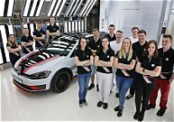

About Volkswagen South Africa
Volkswagen South Africa is one of the leading automotive manufacturers in South Africa. The company is known for producing reliable, innovative, and high-quality vehicles for customers across the country.
Our History
Volkswagen has a long history of automotive excellence and continues to provide modern vehicle solutions for personal, family, and commercial use.
Volkswagen South Africa operates with a strong focus on innovation, sustainability, and customer satisfaction.
Mission Statement
To provide safe, innovative, and high-quality vehicles that improve mobility and driving experiences for all customers.
Vision Statement
To remain a global leader in the automotive industry through innovation, sustainability, and excellence.
Our Team

Our dedicated team works together to ensure excellent customer service, vehicle quality, and innovation across all Volkswagen operations.